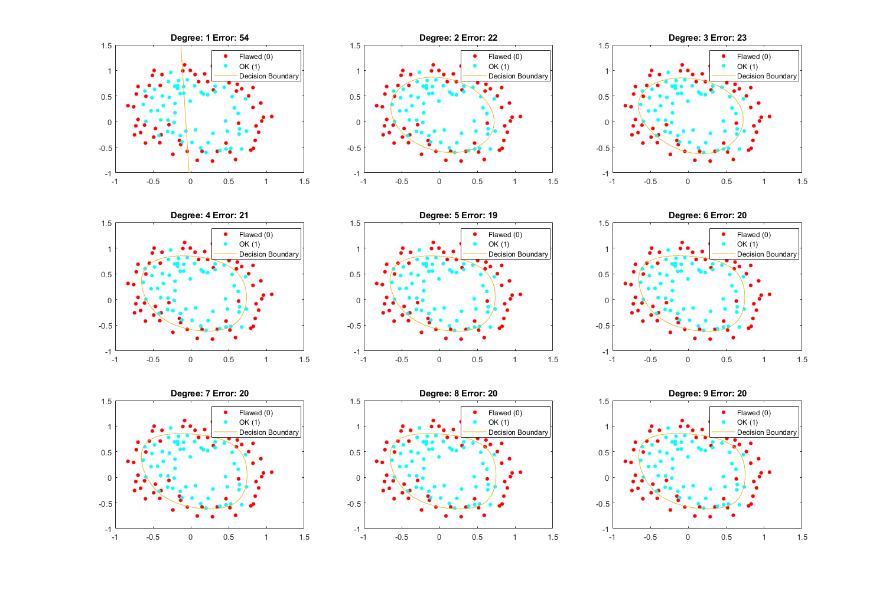
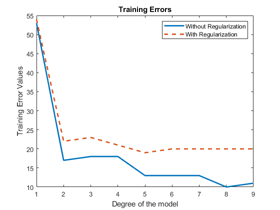
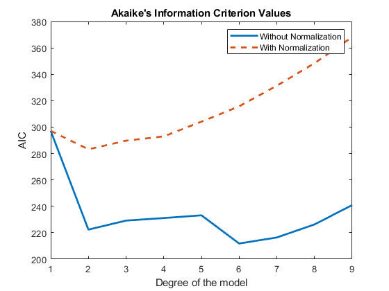
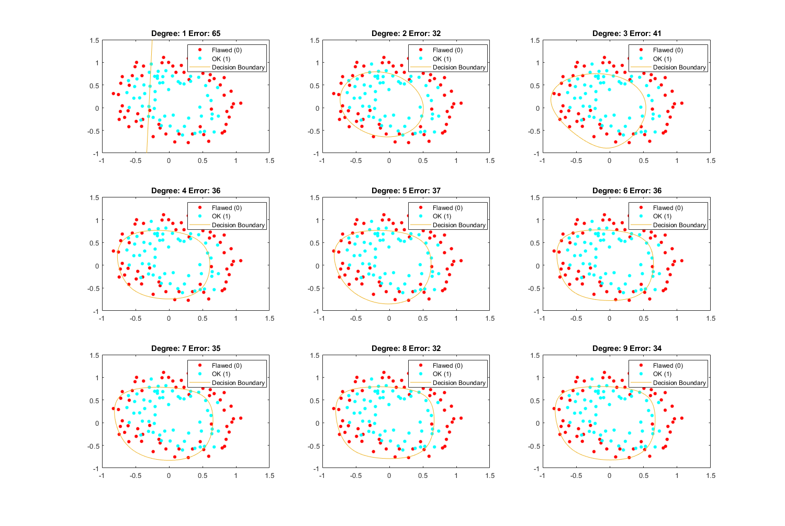

Exercise 9: Regularization
Submitted by Prasannjeet Singh
Contents
Q1. Implementing costLogisticReg() and gradientDescentReg()
The functions are implemented and are available in this folder.
Using the cost function (regularization) to calculate cost. The value was considered to be 1.
load Data/microchiptests.csv; X = [ones(size(microchiptests,1),1) microchiptests(:,1:end-1)]; y = microchiptests(:,end); b = zeros(size(X,2),1); lambda = 1; X(:,1) = []; options = optimset('GradObj', 'on', 'MaxIter', 1000,'Display','off'); theCost = ExTwoFunctions.costLogisticReg(b,X,y,1)
theCost =
0.6931
Using the above implemented gradient descent to calculate the beta and cost
a = 0.1; [betaGradientDescent, costArray, ~] = ExTwoFunctions.gradientDescentReg(X,y,a,lambda); betaGradientDescent costGradientDescent = costArray(end,2)
betaGradientDescent =
-0.0217
-0.2325
-0.0026
costGradientDescent =
0.6906
Q2. Gradient Descent with the Regularization Term
As per the question, the gradient descent has been performed in the same way as done in Exercise-6
hFig = figure(2); set(hFig, 'Position', [0 0 1500 1500]); trainingErrorReg(1,:) = [1 1]; aiccReg(1,:) = [1 1]; C = log(2*pi)+1; for i = 1:9 % i X = ExTwoFunctions.mapFeature(microchiptests(:,1), microchiptests(:,2), i); [n, featCount] = size(X); b = zeros(featCount,1); xPlot = X; X(:,1) = []; % Using Functional Minimization Unconstrained function, this time for Logistic Regression to find the beta values [beta, final_cost, exitFlag, output] = fminunc(@(beta) (ExTwoFunctions.costFunctionFminuncReg(beta, X, y, lambda)), b, options); subplot(3,3,i); gscatter(microchiptests(:,1), microchiptests(:,2), microchiptests(:,3)); hold on; f = @(x,y) beta' * ExTwoFunctions.mapFeature(x,y,i)'; fimplicit(f); curMSE = ExTwoFunctions.costLogisticReg(beta,X,y,lambda); aiccReg(i,:) = [i, n*log(curMSE) + 2*featCount + n*C]; trainingErrorReg(i,:) = [i sum(((ExTwoFunctions.sigmoid((xPlot) * beta))>= 0.5) ~= y)]; title(strcat('Degree:',32,int2str(i),32,'Error:',32,num2str(trainingErrorReg(i,2)))); legend('Flawed (0)', 'OK (1)', 'Decision Boundary'); end snapnow; close(hFig);
Q3. Making a plot on training error
Note that the training error for current model was already calculated in the previous section, and the values were stored in trainingErrorReg matrix. Similarly, the training error for the model in Exercise-6 was created in that exercise, and the values were stored in trainingErrorArray matrix, which was in turn saved in the file tea.mat which is imported here for the purpose of graph plotting.
test = exist('tea.mat', 'file'); if test == 0 clearvars error; error('The file tea.mat doesn''t exist. Please publish Exercise6.m to generate tea.mat'); else load tea.mat; hFig = figure(3); p = plot(trainingErrorArray(:,1), trainingErrorArray(:,2), trainingErrorReg(:,1), trainingErrorReg(:,2),'--'); p(1).LineWidth = 2; p(2).LineWidth = 2; title('Training Errors'); xlabel('Degree of the model'); ylabel('Training Error Values'); legend('Without Regularization', 'With Regularization'); snapnow; close(hFig); end
As can be seen from the graph above, the training error drops sharply from the first degree to second. This is clearly because the first model just consists of a straight line, and it is not possible to separate such type of data with a mere straight line, whether regularized or unregularized. However we don't see much change in the regularized model after that, as the regularized terms in cost and gradient prevent the model from overfitting. Nevertheless, the non-regularized model keeps decreasing constantly after that, with the lowest value when degree is 8, which is tightly overfitted, as can be seen in the graph in exercise 6. A model like this is prone to have a lot of test errors, but we can expect less test errors in the regularized models.
Q4. Cross Validation
As it is not mentioned, I have used Akaike's Information Criterion method to calculate the cross validation for each model. The AIC cross validation for the models in Exercise-6 was calculated there itself, and their values were stored in the file tea.mat, which is imported here to plot the graphs.
if test == 0 clearvars error; error('The file tea.mat doesn''t exist. Please publish Exercise6.m to generate tea.mat'); else hFig = figure(4); q = plot(aiccNoReg(:,1), aiccNoReg(:,2), aiccReg(:,1), aiccReg(:,2),'--'); q(1).LineWidth = 2; q(2).LineWidth = 2; title('Akaike''s Information Criterion Values'); xlabel('Degree of the model'); ylabel('AIC'); legend('Without Normalization', 'With Normalization'); snapnow; close(hFig); end
As we can see, the the validation error values of the models wthout regularization (let's say WR) is always lesser than of those models with regularization (say R). This is simply because the value of AIC is proportional to the Cost (or MSE for regression models), i.e. the value will always increase with the increase of Cost (because logarithmic function always increases with x when x is greater than 0). However, since we know that Cost values will always be lesser for WR-Models (as they are overfitted), it may not be a good idea to compare WR models with R models. Although we can compare both the models separately. Following were my deductions based only on the observation of the graph.
- Non-Regularized Model: Eventhough AIC awards penalty if the number of features increase, we can still see constant drops in the AIC values in this case (because the cost is decerasing constantly). This tells us how much the model has overfit the data. However, if we are to choose the best model amongst these, the model with Degree-6 is the winner with the least validation error as compared to other models.
- Regularized Model: As the validation error constatly and subtly increases with the number of features, we can say that the value of Cost never overpowers the equation. In other words, this model never overfits the data. Thus we can make a logical inference that this model is better than the previous model. Moreover according to the validation error values, the best model is the one with Degree-2, as it has the least validation error amongst the others. This is only fair and logical, because if we see the decision boundaries for these models above, we observe that there is no significant difference in the decision boundaries in all the models from Degree-2 to Degree-9. And if this is the case, then choosing a model with more features (which will consume more computational time, while producing more or less the same result) makes no sense.
Q5. Trying a larger value of
newLambda = 15; hFig = figure(5); set(hFig, 'Position', [0 0 1500 1500]); trainingErrorReg(1,:) = [1 1]; for i = 1:9 % i X = ExTwoFunctions.mapFeature(microchiptests(:,1), microchiptests(:,2), i); [n, featCount] = size(X); b = zeros(featCount,1); xPlot = X; X(:,1) = []; [beta, final_cost, exitFlag, output] = fminunc(@(beta) (ExTwoFunctions.costFunctionFminuncReg(beta, X, y, newLambda)), b, options); subplot(3,3,i); gscatter(microchiptests(:,1), microchiptests(:,2), microchiptests(:,3)); hold on; f = @(x,y) beta' * ExTwoFunctions.mapFeature(x,y,i)'; fimplicit(f); trainingErrorReg(i,:) = [i sum(((ExTwoFunctions.sigmoid((xPlot) * beta))>= 0.5) ~= y)]; title(strcat('Degree:',32,int2str(i),32,'Error:',32,num2str(trainingErrorReg(i,2)))); legend('Flawed (0)', 'OK (1)', 'Decision Boundary'); end snapnow; close(hFig);
A larger value of essentially makes all the shapes almost similar. This can be considered a case of high bias. Boundaries in graphs with Degree 2 & 3 might have some distinct identities, however other boundaries (Degrees 4 to 9) appear identical. I think higher values of may not give us a practical solution, because although it prevents overfitting, it completely destroys unique attributes that are provided by features of higher degree. Another thing we can observe is that the training errors in all the above models are way too much as compared to those modes with a lower value of . This re-affirms our contention that a higher value of does not produce better results.